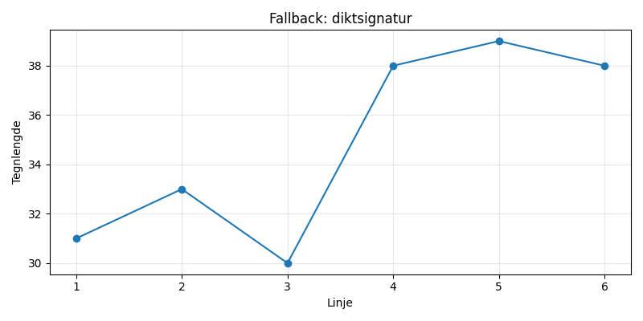

En ensom tekopp i vindens sang, den snurrer rundt på takets kant. Med damp som små hvite baller, danser den under måneskinnets glitter. Når morgenen gryr, er den stille igjen, men drømmer fortsatt av en virvelvind.

import numpy as np
import matplotlib.pyplot as plt
from mpl_toolkits.mplot3d import Axes3D
# Dikt
dikt = """
En ensom tekopp i vindens sang,
den snurrer rundt på takets kant.
Med damp som små hvite baller,
danser den under måneskinnets glitter.
Når morgenen gryr, er den stille igjen,
men drømmer fortsatt av en virvelvind.
"""
# Beregne koordinater for tekoppens rotasjon
theta = np.linspace(0, 2 * np.pi, 100)
r = 1 # Radius for rotasjon
x = r * np.cos(theta)
y = r * np.sin(theta)
# Damp som hvite baller
n_damp = 50
damp_x = np.random.normal(x, 0.2, n_damp)
damp_y = np.random.normal(y, 0.2, n_damp)
damp_z = np.zeros_like(damp_x)
# Måneskinnets glitter (støv)
n_glitter = 100
glitter_x = np.random.normal(x, 0.1, n_glitter)
glitter_y = np.random.normal(y, 0.1, n_glitter)
glitter_z = np.random.normal(0, 0.3, n_glitter)
# Tegne tekoppens rotasjon
plt.figure(figsize=(8, 8))
plt.plot(x, y, 'b-', label='Te kopp')
plt.scatter(damp_x, damp_y, s=10, c='white', label='Damp')
plt.scatter(glitter_x, glitter_y, s=5, c='silver', alpha=0.5, label='Måneskinnets glitter')
plt.title('En ensom tekopp i vindens sang')
plt.xlabel('X-akse')
plt.ylabel('Y-akse')
plt.axis('equal')
plt.legend()
plt.savefig(output_path)execution_ok=False fallback_used=True image_ok=True